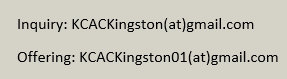

Kingston Chinese Alliance Church 京士顿华人宣道会
我們在天上的父：願人都尊祢的名為聖。願祢 的國降臨；願祢的旨意行在地上，如同行在天 上。我們日用的飲食，今日賜給我們。免我們 的債，如同我們免了人的債。不叫我們遇見試 探；救我們脫離凶惡。因為國度、權炳、榮 耀，全是祢的，直到永遠。阿們。
Our new website is under construction
我们新的网站正在建设
倚靠聖靈大能 向左向右開展
由于疫情限制我们现在只进行线上活动
Due to covid restrictions we will only be servicing online.
Service information 崇拜信息
中文崇拜 每周日上午11:15 Chinese service Every Sunday 11:15am
英文崇拜 每周日上午9:30 English servie Every Sunday 9:30am
祷告会 Prayer's meeting 每周三晚上7点 Wednesday night 7pm
Useful links
KCAC YouTube
微读圣经
o-bible
COME (hymns)
生命聖詩 Lyrics
Bible Gateway
CCLI SongSelect (Login Required)
How To Watch Our Service 如何观看我们的崇拜
To watch Sunday Service please go to our YouTube channel (click here)
请到我们的 YouTube 频道(点这里)观看主日崇拜。
To join our prayer meeting please Email us for Zoom link.
参加祷告会请Email我们获得Zoom链接
Informations信息
For information about our Sunday school, Groups, offering, etc, please email us for more information.
主日学、团契、小组、奉献等信息请Email我们获取信息
Offering can be made by e-transfer to offering email and mail or drop cheque to church
目前可以通过e-transfer、邮寄或自行送支票到教会进行奉献
Please email our offering email for more information.
请给我们的奉献email发邮件了解更多信息
Other inquiry can be sent to our general email.
其他事项咨询可以发送到我们的通用邮箱

Contact information 联系我们
Address: 230 MacDonnell St, Kingston, ON K7L 4C2
Phone: (613) 548-7270
YouTube channel: KCAC Media https://youtube.com/kcacmedia
Emails
